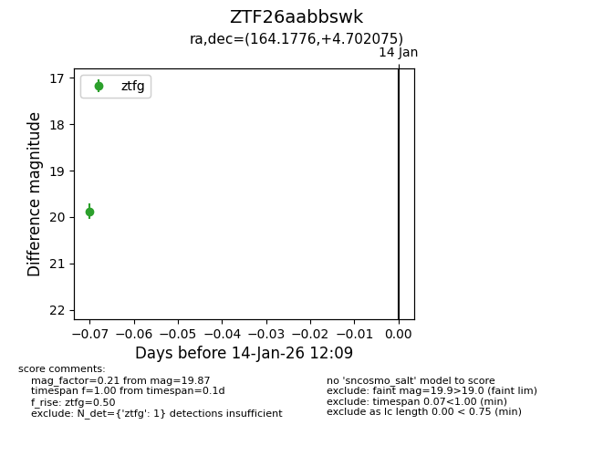
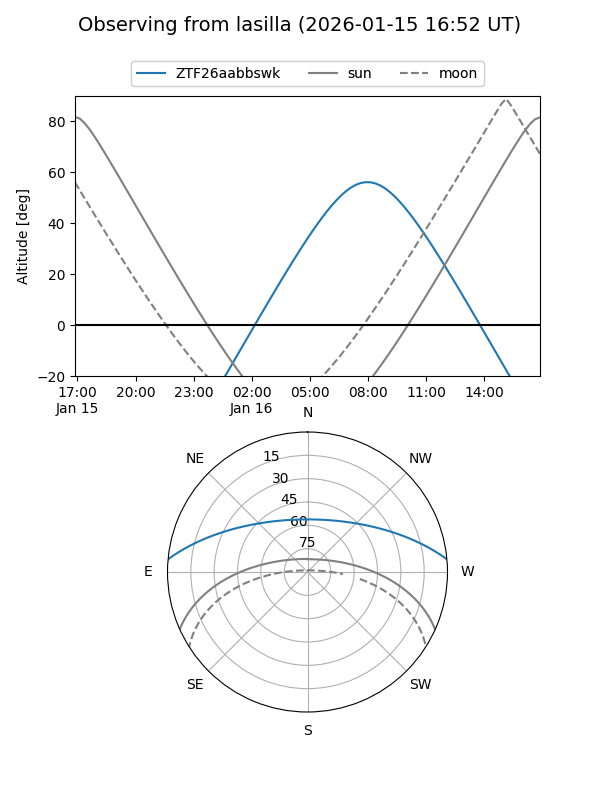
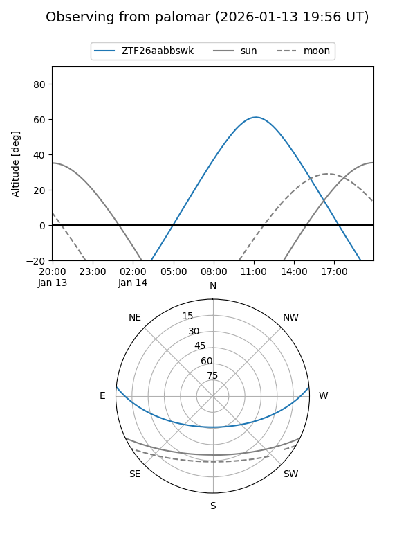

ZTF26aabbswk
Target ZTF26aabbswk at 2026-01-16 12:15
Aliases and brokers:
FINK: link
Lasair: link
ALeRCE: link
alt names
ZTF26aabbswk (ztf,fink_ztf)
Coordinates:
equatorial (ra, dec) = 164.1776,+4.70207
equatorial (HMS+DMS) = 10:56:42.61,+04:42:07.47
galactic (l, b) = (247.1857,+54.64037)
Flags:
Photometry:
last ztfg=19.87
1 ztfg detections
Lightcurve

Visibility


Additional plots